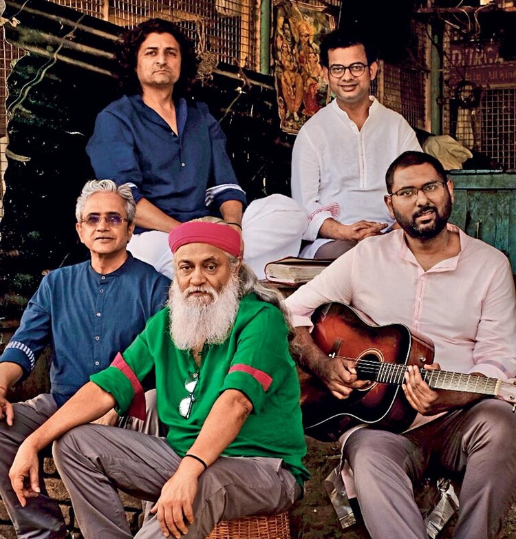

Indian Ocean is an Indian rock band formed in New Delhi in 1990, who are widely recognized as the pioneers of the fusion rock genre in India.[1] Susmit Sen, Asheem Chakravarty were band founding members until Chakravarty died on 25 December 2009, after which Tuheen Chakravorty and Himanshu Joshi were officially inducted into the band as successors. After the departure of Susmit Sen in 2013, Rahul Ram is the only member who appeared on the band's debut album Indian Ocean. Sanjeev Sharma has collaborated with them as lyricist on many albums.

The musical style of the band can be best classified as jazz fusion. It is an experimental genre, fusing raga (traditional Indian tunes) with rock music, guitars and drums, sometimes using Indian folk songs.[3] It has also been described by some music critics as "Indo-rock fusion with jazz-spiced rhythms that integrates shlokas, sufism, environmentalism, mythology and revolution"Since 2010, the band has moved against the lines of record labels. They released their album 16/330 Khajoor Road online for free. The main reason for this move was the frustration over negotiating contracts with record companies and fighting over copyright issues.[5] They have turned to concerts and sponsorships for generating revenue rather than playing in the hands of record labels. For a brief amount of time they were sponsored by Johnnie Walker.[6] They are also a part of the world's first Music Personalisation Initiative named DRP as one of the five Featured Artists. In its 2014 listing of "25 Greatest Indian Rock Songs of the last 25 Years", Rolling Stone India featured two songs, "Ma Rewa" and "Kandisa" from the album Kandisa (2000).[7]
1984–1990: Early years 1980s: Formation In the early 1980s, Asheem Chakravarty played tabla for a Bengali band Niharika. In 1984, Susmit Sen, a fan of Niharika, met him during a concert. For the next 3 years, with Sen as the guitarist and Chakravarty on tabla and drums, they experimented with their music without writing original lyrics. Apart from a concert at Roorkee University, there were not many notable performances by them.[citation needed] 1990: Demo tape The name Indian Ocean was suggested by Sen's father in 1990. Shaleen Sharma was taken on as the drummer, and Indrajit Dutta and Anirban Roy as bassists. The band recorded a demo, with the help of Sen selling his electric guitar to raise the required money. The tape was 45 minutes long and consisted of 7 songs, all recorded in a single day. Despite the rushed recording, the quality of the demo tape impressed His Master's Voice (HMV) and they were offered an album deal.[8][9] 1991–2009: Asheem Chakravarty era Rahul Ram and debut album In 1991, Rahul Ram who was Sen's schoolmate at St. Xaviers, Delhi, joined the band replacing Anirban Roy on bass. They started work on their first album. The eponymous debut album came out in 1993, and it sold over 40,000 copies within a year of its release. It became the highest selling record by any Indian band at that time. Amit Kilam In 1994, drummer Shaleen Sharma left the band. He was replaced by Amit Kilam who was much younger than the other band members. This line-up with Susmit Sen, Asheem Chakravarty, Rahul Ram and Amit Kilam became the most recognisable and the most successful in the band's timeline so far. Since then, they have rolled out a live album, which was recorded and mixed on two tracks by Vikram Mishra, titled Desert Rain, followed by two studio albums, Kandisa and Jhini. They also composed the soundtrack of the Anurag Kashyap directorial Black Friday and contributed a couple of tracks to the soundtrack of Peepli Live. Death of Asheem Chakravarty Asheem Chakravarty was hospitalised in Doha in October, after suffering a heart attack. He was comatose for a brief period and recovered well.[10] On 25 December 2009, he died in New Delhi due to a cardiac arrest.[11]